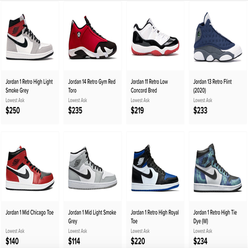
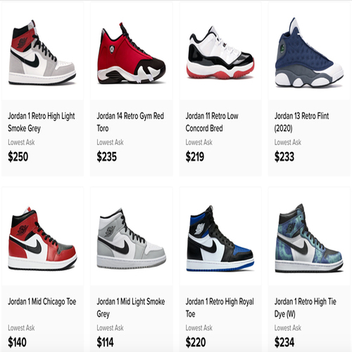

Daniel Cortez
I grew up in San Pedro, Califonrnia, a town in the Los Angeles Harbor Area. I have lived there with both of my parents for my entire life, where I learned how to build long lasting relationships and shape my curious mind. My home and my people are incredibly important to me, as I know that what I do while I am outside of my community, I am doing for those that played a role in building me into the man that I am today. I am ambitious, and will continue to work diligently in pursuing the college degree that will allow me to obtain my desired career.
I am a student at the University of California, Riverside, where I am currently majoring in Pre-Business, looking to emphasize in Operations and Supply Chain Management. I am interested in the systems involved with the production of goods and the global markets. I hope to find myself in a field that I am passionate about, such as fashion or entertainment. I believe this interest stems from my prior experience in entreprenuership, as I participated in reselling highly profitable items such as sneakers, clothing, and collectables. With this activity I gained valuable financial knowledge, such as saving, investing, and conducting transactions. Additionally, I was able to build a network with like minded individuals that shared in my passion, along with a dedicated group of buyers that supported my social media platforms, increasing my ability in reaching customers. I always was curious about how the specific items I resold were produced, as well as how they managed to reach global distributers and audiences.
Throughout my experience in the University of California, Riverside, I hope to build a network and foundation that will allow me to be successful in the future job market. While in the University Honors Program, I am actively seeking out opportunities to enhance my college career. I look to find internships that will connect me with potential companies and significant figures in the field that I may learn from. Upon receiving my Bachelor's of Science in Business Administration, I will seek out further education in Graduate's School, where I will pursue an MBA, further placing myself in a position to secure future success. With my prospective success in my career, I hope to be able to support both my family and community, while also actively contributing to solving the issues that loom over the lives of future generations.
Experience
Entrepreneur
• Mananged Finances and Investments
• Utilized Social Network Platforms to Build a Customer Base
• Analyzed Trends
Blood Drive Coordinator
• Responsible for overseeing food production
• Delegate Tasks to Members
• Record Participants and Schedule Arrival Times
Editor
• Utilized Technologies to Develop the Yearbook
• Familiar with Photoshop
• Led a Group Responsible For Multiple Pages in the Yearbook
Education
University of California Riverside
Portfolio
 (1).jpeg)
.jpeg)

.jpeg)
